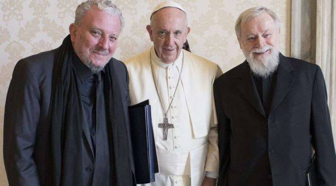

<section>
  <div class="content">
    <div class="row">
      <div class="col-md-6 offset-md-3 corpo-post">
        <p>
          
          <small>“Em 4 de setembro de 2017, o Papa Francisco recebeu Kiko Arguello e Pe. Mario Pezzi em audiência para tratar sobre
            a celebração dos 50 anos do Caminho Neocatecumenal”</small>
        </p>
        <p class="titulo">Celebração</p>
        <p>
          Em 5 de maio, o Papa Francisco preside a Celebração em Ação de Graças pelos 50 anos do início do Caminho Neocatecumenal na
          diocese de Roma, de onde passou a se difundir pelos demais países da Europa e dos outros quatro continentes.
        </p>
        <p class="subtitulo">
          Ação de Graças
        </p>
        <p>
          A expectativa é que 200.000 pessoas de todas as partes do mundo participem do encontro, entre elas, 2.000 brasileiros. O
          evento começa às 10h (hora local) na Universidade de Roma Tor Vergata, sendo que a celebração com o Santo Padre
          está marcada para às 11h. Neste dia, após o canto do hino de Ação de Graças, o Te Deum, o Papa Francisco fará o
          envio das Comunidades em Missão de Roma. São comunidades inteiras que já concluíram as etapas do Neocatecumenato
          e renovaram as promessas batismais que passam a viver a fé em paróquias de regiões mais difíceis de Roma para,
          ali, ser um sinal e testemunha do amor de Cristo e luz das nações, dispostos também a auxiliar os párocos nos trabalhos
          pastorais, ministérios e demais necessidades. O Santo Padre também fará o envio de novas missões ad gentes.
        </p>
      </div>
    </div>
  </div>
</section>